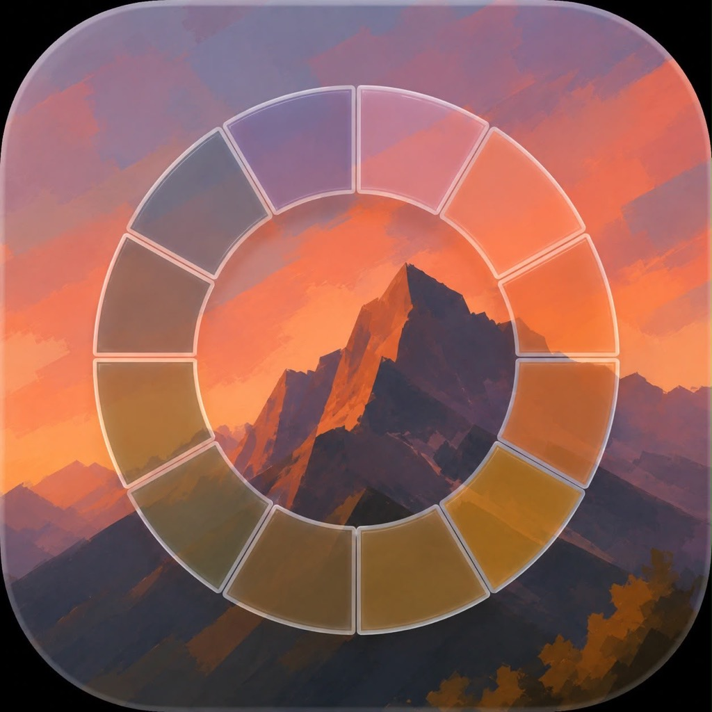
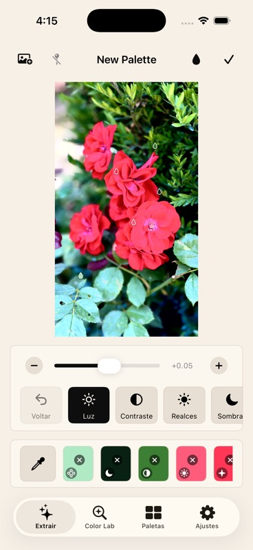
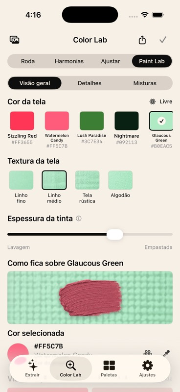

Importez une photo
Choisissez une image de référence et construisez votre étude autour d’elle tout en préservant la photo d’origine.

Artist LabUne app iOS pour les artistes
Étudier la couleur pour peindre.
Palettes, harmonies et études picturales à partir de vos photos de référence.

Processus créatif
Choisissez une image de référence et construisez votre étude autour d’elle tout en préservant la photo d’origine.
Extrayez les couleurs automatiquement ou prélevez-les manuellement, puis réglez la lumière, le contraste, la température, la teinte, les hautes lumières, les ombres, la vibrance et la clarté.
Ouvrez Color Lab et Paint Lab pour comparer les harmonies, la répartition des couleurs, les mélanges visuels et le rendu des couleurs sur différents fonds picturaux.
Color Lab
Color Lab place les couleurs de l’image sur un cercle chromatique, met en évidence les harmonies, montre la répartition approximative des couleurs et vous permet d’explorer des variations tout en préservant votre palette d’origine.


Paint Lab
Explorez le rendu d’une couleur sur une toile blanche, des gris, des tons terreux, des fonds chauds ou des couleurs personnalisées. Ces aperçus pédagogiques vous aident à anticiper les variations de couleur, de luminosité et de contraste avant de peindre sur une vraie toile.
Conçu pour l’atelier
Les photos, palettes, réglages, noms de couleurs et laboratoires restent sur votre appareil dans cette version.
Votre photo d’origine et vos couleurs de base restent intactes. Les aperçus et les essais s’appuient sur vos réglages enregistrés.
Exportez votre palette, votre photo retouchée ou vos études Color Lab et Paint Lab pour les utiliser pendant que vous peignez.
Téléchargement
Artist Lab arrive bientôt sur l’App Store. Le lien de téléchargement apparaîtra ici dès que l’app sera disponible.